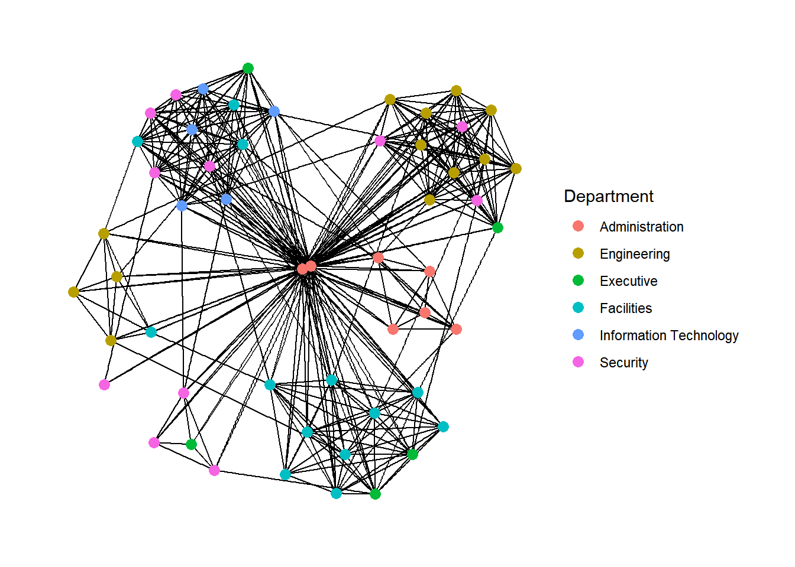
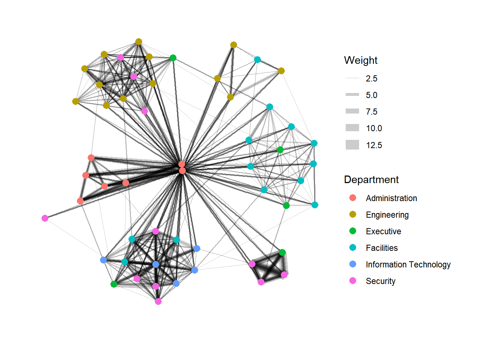

In-class Exercise 09
1. Prepare the data
2. Using tbl_graph() to build tidygraph data model.
In this section, you will use tbl_graph() of tinygraph package to build an tidygraph’s network graph data.frame.
Before typing the codes, you are recommended to review to reference guide of tbl_graph()
# A tbl_graph: 54 nodes and 1372 edges
#
# A directed multigraph with 1 component
#
# Node Data: 54 × 4 (active)
id label Department Title
<dbl> <chr> <chr> <chr>
1 1 Mat.Bramar Administration Assistant to CEO
2 2 Anda.Ribera Administration Assistant to CFO
3 3 Rachel.Pantanal Administration Assistant to CIO
4 4 Linda.Lagos Administration Assistant to COO
5 5 Ruscella.Mies.Haber Administration Assistant to Engineering Group Mana…
6 6 Carla.Forluniau Administration Assistant to IT Group Manager
7 7 Cornelia.Lais Administration Assistant to Security Group Manager
8 44 Kanon.Herrero Security Badging Office
9 45 Varja.Lagos Security Badging Office
10 46 Stenig.Fusil Security Building Control
# ℹ 44 more rows
#
# Edge Data: 1,372 × 4
from to Weekday Weight
<int> <int> <ord> <int>
1 1 2 星期日 5
2 1 2 星期一 2
3 1 2 星期二 3
# ℹ 1,369 more rows3. Plotting a basic network graph

4. Changing the default network graph theme
In this section, you will use theme_graph() to remove the x and y axes. Before your get started, it is advisable to read it’s reference guide at least once.
g <- ggraph(GAStech_graph,
layout='nicely') +
geom_edge_link(aes())+
geom_node_point(aes(color=Department), size=3)
g + theme_graph()
set_graph_style()
g <- ggraph(GAStech_graph,
layout='nicely') +
geom_edge_link(aes(width=Weight),
alpha=0.2) +
scale_edge_width(range=c(0.1,5))+
geom_node_point(aes(color=Department),
size=3)
g + theme_graph()